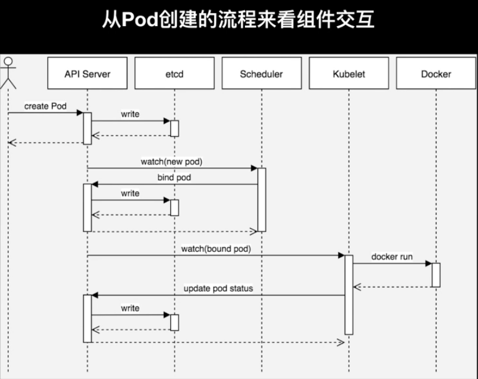

一 Kubernetes概述¶
1.1 容器编排工具¶
docker 官方编排工具
docker compose # 单机编排工具
docker swarm # 将多台 docker 提供的计算资源整合的接口，随后 docker compose 编排的时候只需要面向这个整合的接口进行编排就行，无论接口下有多少个主机。
docker mechine # 将一个主机初始化为一个能够加入 docker swarm 集群中的预置程序
mesos IDC 操作系统
IDC 操作系统，能将一个 IDC 提供的硬件资源，统一调度和分配，它只是一个资源分配工具，非能够直接托管容器的，所以它提供了以个能够直接编排框架，marathon。
kubernetes
目前最流行的容器编排工具,市场占有率最高
1.2 kubernetes¶
kubernetes 是希腊语，翻译过来是：舵手的意思，它的原型是谷歌内部使用 Borg 集群管理系统，可以说是集结了 Borg 设计思想的精华，并且吸收了 Borg 系统中的经验和教训。
它的目标不仅仅是一个编排系统，而是提供一个规范，可以让你来描述集群的架构，定义服务的最终状态，Kubernetes可以帮你将系统自动地达到和维持在这个状态。Kubernetes作为云原生应用的基石，相当于一个云操作系统，其重要性不言而喻。
kubernetes 在 2014 年发布了第一个版本，目前开源并托管在 Github 上。
https://github.com/Kubernetes
目前，AWS、阿里云、微软云，目前已经原生支持 K8S ，目前已经可以让用户直接部署云原生的服务。
有什么优势
- 基于 Borg 系统，设计成熟，开源、且轻量级，简单易学、容易理解；
- 模块化，可插拔，支持钩子，可任意组合，例如：网络组件 flannel，存储插件；
- 故障发现（存活性探针）和自我修复能力（副本数量）、服务滚动升级（就绪探针）和在线扩容（副本数量）密钥和配置管理；
- 可扩展的资源自动调度机制（多维度的水平自动扩容）、多粒度的资源配额管理能力（资源限制）。
1.3 环境架构¶
Kubernetes 是一个集群，整合多台计算机的计算能力，它是一种有中心节点模式的集群，在 K8S 集群中主机分为两种角色：
Master：集群的管理节点，有一个或者一组节点，一般 3 个足够了。
nodes：提供计算资源的节点，就是运行容器的节点，可以扩展。
客户端创建启动容器的请求交给 Master ，Master 上有一个调度器它能分析各 nodes 节点上的资源状态，找一个最适合运行用户容器的节点，并在这个节点上使用 Docker 启动这个容器，node 节点的 Docker 在启动容器时候会首先检查本地有没有镜像，如果没有就从仓库中 pull 然后运行。
那么仓库可以运行为容器，所以也可以托管在 Kubernetes 之上，其实 Kubernetes 可以托管自身，即自托管。
ApiServer
kubernetes 接收用户创建容器等请求的是 Kubernetes Cluster，那么它对外提供服务的接口就是一个 API 接口 ，这个接口需要编程来访问，或者通过编写好的客户端程序来访问，Kubernetes Master 上有一个组件就是 ApiServer，来接收客端请求，解析客户端请求，其主要功能包括认证授权、数据校验以及集群状态变更，以及负责其他模块直接的相互通讯和数据交互，只有api server才能操作etcd，其他模块想要获取数据需要通过api server提供的接口进行相关数据操作
Scheduler
scheduler watch apiserver，接受系统或用户请求是运行，如何要运行一个pod，那么 Master 会使用调度器（scheduler）根据请求来分配一个能够运行容器的 nodes 节点，例如：根据用户对资源要求，CPU、内存、来评估哪个 nodes 最合适运行。
大概的过程就是：首先是预选，从 nodes 中挑选出符合用户容器运行要求的，然后在这些预选结果中进行优选，选出最佳的适配 node。
Controller（控制器）
如果运行容器的节点宕机或者容器本身运行出现问题，kubernetes 能够在其他节点再启动一个一模一样的容器，这就是 Kubernetes 提供的自愈能力。
控制器就实现了监控它所负责的每一个容器的健康状态，一旦发现不健康了，那么控制器会向 Master 发送请求，Master 会再次由调度器挑选出合适的节点再次运行这个容器。
它能持续性探测所管理的容器，一旦不健康，或不符合用户定义的健康状态，就会由它发起来请求，来保证容器向用户希望的健康状态迁徙。
而 Kubernets 支持众多的控制器，支持容器健康的控制器只是其中一种。
ControllerManager（制器管理器）
在 Master 内置组件中有一个控制器管理器，它负责监视着每一个控制器，如果控制器不健康无法工作，那么由控制器管理器来确保控制器的健康，由于 Master 有多个，所以具有冗余性。
Pod（原子调度单元，是容器的封装）
在 Kubernetes 上调度的原子单元，Kubernetes 不直接调度容器，而是 Pod，Pod可以理解为容器的二次封装，可以由一个或者多个容器组成，多个容器共享同一个网络名称空间：NET、UTS、IPC。
同一个 POD 里的容器，还能共享同一个存储卷，存储卷可以属于 POD。
一般一个 POD 只运行一个容器，如果需要在POD放多个容器，那么一般有一个主容器，其他容器是为主容器提供服务的。
Node（工作节点）
提供计算资源的节点，就是运行 Pod 的主机，Kubenetes Cluster 统一管理所有的 node 节点的计算资源，当用户请求创建资源的时候，可以检查目前集群还有没有资源可以运行用户的容器，这实现了统一调度统一管理的一个平台。
Label（标签）
一个由 key = value 组成的标签，可以为 POD 打上一个标签。
Selecter（标签选择器）
集群中运行的众多 POD ，前面提到一个控制器可以管理若干个 POD ，那么控制器如何从集群中运行的所有 POD 中挑选出来自己需要管理的 POD 呢?
在创建一个 POD 的时候为 POD 打上一个标签，让程序可以通过这个标签来识别出来这个POD，还可以用来区分一组相同功能的POD，例如：创建四个nginx pod，可以给每个pod加一个 K/V类型的标签如：app=nginx，将来找出这四个 nginx pod，那么条件就是根据 拥有 key 为 app 的pod 并且 value 为 nginx 来挑出这组 POD。
标签不是 POD 唯一具有的机制，其他的组件同样可以有标签。
1.4 架构和组件¶

Kubernetes 通过装饰器模式，扩充资源的描述。
面向资源简化模型（go-restful) 所有 Kubernetes 可操作对象都可以用资源进行抽象，并且都有resetful的API与之对应。
异步动作保证性能（informers） 依赖资源的主键通过异步进行监听，具体的执行由消费者决定额度
状态机提供状态基线（etcd） 数据即状态。informers 还可以定期同步来处理中间状态。
组件松耦合可插拔 组件通讯果果APIServer进行中转，组件之间没有强依赖关系
Etcd
用于 Kubernetes 的后端数据存储,所有集群数据都存储在此处
Master 节点负责维护集群的目标状态，上面运行的主控组件有
kube-apiserver # 对外暴露了 Kubernetes API，它是的 Kubernetes 前端控制层，只有 API Server 会与 etcd 通信，其它模块都必须通过 API Server 访问集群状态
kube-controller-manager # 处理集群中常规任务，它是单独的进程，内部包含多个控制器，例如维护 POD 数量
kube-scheduler # 监视新创建的 Pod 为新创建的 POD 分配合适的 node 节点
Node 节点实际负责实施，也就是运行 POD 的节点，上面运行的组件有
kubelet # 节点自注册和节点状态更新，它监测已经分配给自己的 Pod，为 POD 准备卷，下载 POD 所需的 Secret，下载镜像并运行，进行生命周期探测，上报 POD 和节点状态
kube-proxy # 通过维护主机上的网络规则并执行连接转发，将 Kubernetes 提供的网络服务代理到每个节点上，实现了Kubernetes服务抽象
docker # 用于运行容器
插件
插件是增强集群功能的 Pod 和 Service,插件对象本身是受命名空间限制的,被创建于 kube-system 命名空间.
DNS
虽然其他插件并不是必需的,但所有 Kubernetes 集群都应该具有Cluster DNS,许多应用依赖于它,为 Kubernetes 服务提供DNS记录,容器启动该后会自动将 DNS 服务器包含在 resolv.conf 中.